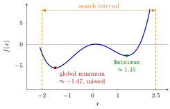

One-Dimensional Optimization with optimize()¶
Definition¶
For a function of one real variable and an interval ,
searches numerically for a point where is smallest and returns a list with two components:
$minimum: the location found;$objective: the function value .
With maximum = TRUE it searches for a largest value instead and returns $maximum and $objective. Further arguments in ..., given by name, are passed on to f, whose first argument must be the variable being optimized. The British spelling optimise() is the same function.
Interpretation¶
optimize() treats your objective function as a black box: it evaluates the function at cleverly chosen points inside the interval, narrows the interval step by step towards the lowest value seen, and stops when the remaining interval is tiny. You never need a formula for the derivative, which is what makes it useful for functions that are themselves the result of a simulation.

The figure is Example 4. The search interval runs from to (orange dashed lines) and has two dips in it. optimize() returns the point near (green), a local minimum with , although the global minimum near is lower, with . The search first compares with , keeps the part of the interval around the lower one, and never returns to the left dip.
So the method is reliable when is continuous and has a single minimum in the interval, for instance a convex function such as . With several local minima it may return any of them; plot the function first and, if needed, shrink the interval around the dip you want. The default accuracy is about four decimals, so digits beyond that carry no meaning. To maximize, either set maximum = TRUE or minimize , the minimization-to-maximization trick from OR Modelling. In Example 3 the objective is an average cost over simulated days of random demand, which is the newsvendor problem solved numerically.
A common mistake is reading $minimum as the smallest function value. It is the location ; the value is $objective. Another is forgetting that the interval must contain the optimum: optimize() never looks outside it and returns a point near the boundary instead; for on it returns .
Key Results¶
optimize(f, c(a, b))minimizes over ;maximum = TRUEmaximizes. The result is a list with$minimum(or$maximum) and$objective.- The first argument of
fis the variable; extra parameters are passed by name, as inoptimize(f, c(-10, 10), a = 5). - If has one minimum in the interval,
optimize()finds it; with several local minima it may return a local one. - The result is accurate to roughly by default; for a variable that must be a whole number, compare the objective at
floor()andceiling()of the numerical solution. - Generate random inputs once, outside the objective function, so that all candidate values are compared on the same simulated data.
Examples¶
1. A quadratic with known minimum. has its minimum at :
f <- function(x) (x - 3)^2 + 1
res_min <- optimize(f, interval = c(-10, 10))
res_min$minimum
#> [1] 3
res_min$objective
#> [1] 1
2. Maximizing, and an extra parameter. has its maximum at . A parameter in shifts the curve up or down without moving the minimizer:
g <- function(x) x * (10 - x)
optimize(g, interval = c(0, 10), maximum = TRUE)
#> $maximum
#> [1] 5
#>
#> $objective
#> [1] 25
#>
h <- function(x, a) (x - 3)^2 + a
optimize(h, interval = c(-10, 10), a = 5)$objective
#> [1] 5
3. An order quantity under random demand. A store orders units for one day. Demand is Poisson with mean 20; each unit left over costs and each unit short costs . The average cost over 10,000 simulated days is minimized over :
set.seed(123)
demand <- rpois(10000, lambda = 20)
simulate_cost <- function(Q, demand, h = 1, p = 5) {
leftover <- pmax(Q - demand, 0)
lost_sales <- pmax(demand - Q, 0)
mean(h * leftover + p * lost_sales)
}
res_Q <- optimize(simulate_cost, interval = c(0, 60), demand = demand)
res_Q$minimum
#> [1] 24.00001
res_Q$objective
#> [1] 6.865401
c(simulate_cost(floor(res_Q$minimum), demand),
simulate_cost(ceiling(res_Q$minimum), demand))
#> [1] 6.8654 6.9552
qpois(5 / 6, lambda = 20)
#> [1] 24
The numerical optimum lies between the whole numbers 24 and 25, and 24 has the lower simulated cost. Since a shortage costs more than leftover stock, the best order exceeds the mean demand of 20. The discrete newsvendor rule predicts the smallest with , which is what qpois(5 / 6, 20) computes.
4. A local minimum. has a global minimum near and a local one near :
f4 <- function(x) x^4 - 4 * x^2 + x
optimize(f4, interval = c(-2, 2.5))
#> $minimum
#> [1] 1.347004
#>
#> $objective
#> [1] -2.618556
#>
optimize(f4, interval = c(-2, 0))
#> $minimum
#> [1] -1.472996
#>
#> $objective
#> [1] -5.444192
#>
On the search ends in the higher dip. Restricting the interval to finds the global minimum.
Prerequisites¶
Related Concepts¶
- Optimization with optim()
- The r, d, p, q Distribution Functions
- Objective Function
- Newsvendor Model
- Discrete Newsvendor Rule
- Minimization-to-Maximization Transformation
- Poisson Distribution
Sources¶
- Programming for EOR · Week 5
- Lecture 5 script, Matrix operations, random numbers and optimisation, sections "Optimisation in R" and "One-dimensional optimisation with optimize()"; Solutions Week 5, exercise 10
Aliases: optimize(), optimise(), optimize, maximum = TRUE, univariate optimization in R, numerical minimization of one variable Keywords: objective function, search interval, minimum and maximum, local optimum, simulated cost
Last updated: 10 November 2026 16:43
One-Dimensional Optimization with optimize()Optimization with optim()Writing FunctionsLocal ExtremumGlobal ExtremumThe r, d, p, q Distribution FunctionsObjective FunctionNewsvendor ModelDiscrete Newsvendor RuleMinimization-to-Maximization TransformationPoisson Distribution